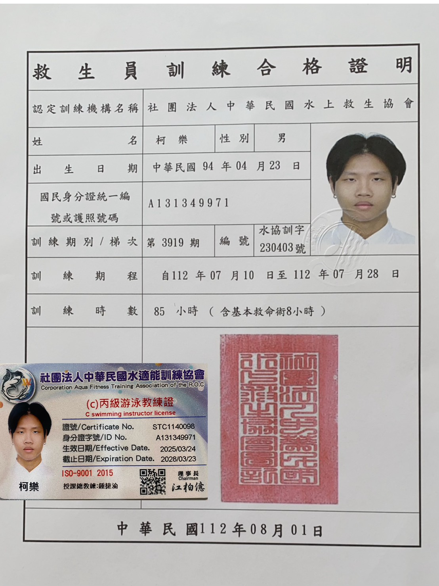
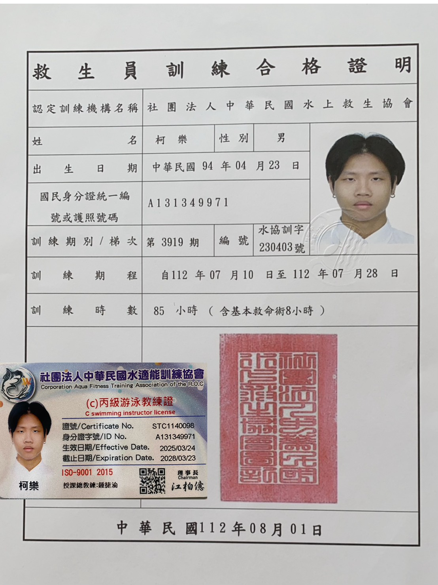

👋 自我介紹
姓名：柯樂
學校：國立聯合大學
主修：資訊管理學系
興趣：游泳
目標：麥當勞加大可以不用考慮，吃完餅乾不舔手指
姓名：柯樂
學校：國立聯合大學
主修：資訊管理學系
興趣：游泳
目標：麥當勞加大可以不用考慮，吃完餅乾不舔手指
專案目標：整合教練、家長與系統管理員三角色的游泳課程與費用管理。
主要功能：
資料表設計：Students、Lessons、Attendance、MonthlyReports
技術架構：PHP + MySQL，採用 MVC 架構，Bootstrap 前端設計
展示連結：（可於 GitHub Pages 部署後補上）